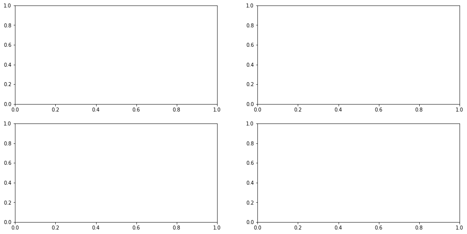
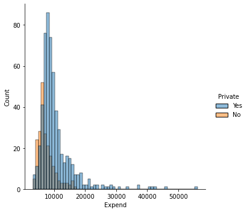

import warnings
warnings.filterwarnings('ignore')Lab 02
Warm-up: Exploratory Data Analysis
- Where possible, certainly for any variable of particular interest-examine exploratory visualizations.
Visualization
- The objective of visualization is to reveal hidden information through simple charts and diagrams.
- It is instrumental in identifying patterns and relationships among groups of variables.
- Visualization techniques depend on the type of variables.
Tools for Displaying Single Variables
Histograms
- Histograms are the most common graphical tool to represent continuous data.
- A histogram divides the data into bins, counts the number of data points falling into each bin, and shows the bins on the horizontal axis and the frequency on the vertical axis.
- The bin width (sometimes called class width) has an impact on the shape of the histogram.
#import the data set in the .csv file into your your current session
import pandas as pd
college_df = pd.read_csv("https://www.statlearning.com/s/College.csv", index_col = 0)#https://matplotlib.org/stable/tutorials/introductory/pyplot.html
import matplotlib.pyplot as plt
#For college_df, produce some histograms for a few of the quantitative variables.
#change numbers of bins
n_bins = 50
#the frequency of number applications decreases as magnitude increases
plt.hist(college_df['Apps'], bins = n_bins, color = 'red', alpha = 0.5, edgecolor = 'black')
plt.title('The histogram of number of applications received')
plt.show()Subplotting with matplotlib
Using the College data set, let’s create a 2x2 subplot with the following variables:
- Apps
- perc.alumni
- S.F.Ratio
- Expend
where each subplot is a histogram.
#create subplots with matplotlib
#https://matplotlib.org/stable/api/_as_gen/matplotlib.pyplot.subplots.html?highlight=subplots
import matplotlib.pyplot as plt
#Create a figure and a set of subplots
#returns a figure and array of axes
figure, axs = plt.subplots(2, 2, figsize = (16,8)) #figsize: width, height, respectively.
#axs object is a 2 by 2 numpy array
#type(axs)
#axs
import matplotlib.pyplot as plt
#Create a figure and a set of subplots
#returns a figure and array of axes
figure, axs = plt.subplots(2, 2, figsize = (16,8)) #figsize: width, height, respectively.
#fill-in the subplots
n_bins = 50
##A question: Why not plt hist??
#the frequency of number applications decreases as magnitude increases
axs[0,0].hist(college_df['Apps'], bins = n_bins, color = 'red', alpha = 0.5, edgecolor = 'black')
axs[0,0].set_title('The histogram of number of applications received')
axs[0,1].hist(college_df['Accept'], bins = n_bins, color = 'green', alpha = 0.5, edgecolor = 'black')
axs[0,1].set_title('The histogram of number of applications accepted')
#the distribution of estimated book costs is symmetric. there a few expensive books used at colleges.
axs[1,0].hist(college_df['Books'], bins = n_bins, color = 'orange', alpha = 0.5, edgecolor = 'black')
axs[1,0].set_title('The histogram of estimated book costs')
axs[1,1].hist(college_df['Expend'], bins = n_bins, alpha = 0.5, edgecolor = 'black')
axs[1,1].set_title('The histogram of instructional expenditure per student')
plt.show(figure) #plt.show() turns off printing the data array etc
#you can change the number of bins, as you wish
#could not give y axis title for each subplotDensity Plots
- A density plot is a smoothed, continuous version of a histogram estimated from the data.
- A point is drawn at the top of every individual rectangular bin and all of these points are then connected together to make a single smooth density estimation. (Try to make a connection between Rieman sums and its limit as the number of bins goes to infinity (or width of the bins approaches to zero) and histograms).
- The height of the curve is adjusted so that the total area under the curve integrates to one.
Histograms, Density Plots with seaborn
#https://seaborn.pydata.org/generated/seaborn.displot.html
#no submodule
import seaborn as sns
#draw a histogram with seaborn, kind="hist" is default
sns.displot(x = college_df.Expend, kind = "hist")
#draw a denstiy plot with seaborn with kernel density
sns.displot(x = college_df.Expend, kind = "kde")
#overlay histogram with a density plot
sns.displot(x = college_df.Expend, kde = True);Tools for Displaying a Single Variable with repect to a Categorical Variable
#Each type of plot can be drawn separately for subsets of data using **hue mapping**
#Investigate how expenditure is changing with respect to school type
sns.displot(data = college_df, x = "Expend", hue = "Private", kind = "hist")
sns.displot(data = college_df, x = "Expend", hue = "Private", kind = "kde");
#as you can see instructional expenditure is higher in private schools compared to non-private ones
#alternatively you can prefer stacked plots
sns.displot(data = college_df, x = "Expend", hue = "Private", kind = "hist", multiple = "stack");#faceting, map the expenditure variable into private variable with col argument
sns.displot(data = college_df, x = "Expend", col = "Private", kind = "hist")
sns.displot(data = college_df, x = "Expend", col = "Private", kind = "kde");Boxplots
- Boxplots are used to describe the shape of data distribution.
- We can also use the boxplots to describe the shape of data distribution with respect to the levels of a categorical variable.
- It also enables us to identify outliers where an observation is considered as an outlier if it is either less than Q1 - 1.5 IQR or greater than Q3 + 1.5 IQR, with IQR = Q3 - Q1.
- This rule is conservative and often too many points are identified as outliers. Hence sometimes only those points outside of [Q1 - 3 IQR, Q3 + 3 IQR] are only identified as outliers.
Using the College data set, we will create a new categorical variable, called Elite, by binning the Top10perc variable. We are going to divide universities into two groups based on whether or not the proportion of students coming from the top 10% of their high school classes exceeds 50%.
#attach a new column to the college df
import pandas as pd
college_df = pd.read_csv("https://www.statlearning.com/s/College.csv", index_col = 0)
#this should be much more smarter.
#i tried boolean indexing below, but it worked first, but,
#it did not work later.
college_df['Elite'] = "No"
college_df.Elite[college_df.Top10perc>50] = "Yes"
#alternatively, a bit longer way to add a new column to a data frame
#elite = []
#for i in college_df['Top10perc']:
# if i > 50 : elite.append('Yes')
# else: elite.append('No')
#college_df['Elite'] = elite
college_df.head()| Private | Apps | Accept | Enroll | Top10perc | Top25perc | F.Undergrad | P.Undergrad | Outstate | Room.Board | Books | Personal | PhD | Terminal | S.F.Ratio | perc.alumni | Expend | Grad.Rate | Elite | |
|---|---|---|---|---|---|---|---|---|---|---|---|---|---|---|---|---|---|---|---|
| Abilene Christian University | Yes | 1660 | 1232 | 721 | 23 | 52 | 2885 | 537 | 7440 | 3300 | 450 | 2200 | 70 | 78 | 18.1 | 12 | 7041 | 60 | No |
| Adelphi University | Yes | 2186 | 1924 | 512 | 16 | 29 | 2683 | 1227 | 12280 | 6450 | 750 | 1500 | 29 | 30 | 12.2 | 16 | 10527 | 56 | No |
| Adrian College | Yes | 1428 | 1097 | 336 | 22 | 50 | 1036 | 99 | 11250 | 3750 | 400 | 1165 | 53 | 66 | 12.9 | 30 | 8735 | 54 | No |
| Agnes Scott College | Yes | 417 | 349 | 137 | 60 | 89 | 510 | 63 | 12960 | 5450 | 450 | 875 | 92 | 97 | 7.7 | 37 | 19016 | 59 | Yes |
| Alaska Pacific University | Yes | 193 | 146 | 55 | 16 | 44 | 249 | 869 | 7560 | 4120 | 800 | 1500 | 76 | 72 | 11.9 | 2 | 10922 | 15 | No |
#https://seaborn.pydata.org/generated/seaborn.boxplot.html
#compare the graduation rates with respect to school's elite status
sns.boxplot(data = college_df, x = "Elite", y = "Grad.Rate");
#vertical box-plot
#as you can see in the elite schools, the graduate rate is higher compared to non-elite ones
#we can see a few outliers in the non-elite schools. while graduation rate is
#very high in some non-elite schools, graduation rate is very low in some non-elite schools#this is an example that column names should not involve .
#college_df.Grad.Rate.max()#will not work
#hmmm
college_df["Grad.Rate"].max()118#produce side-by-side boxplots of Outstate versus Private.
#horizontal box-plot
sns.boxplot(data = college_df, x = "Outstate", y = "Private");
#as you can see in private schools, out-state tution fees are also very high.
#if you born in Arizona, but, want to study in a private school, such as in Boston,
#you are more likely to pay for higher tution rates.
Tools for Displaying Relationships Between Two Variables
Scatterplot
- The most conventional way to display relationships between two variables is a scatterplot.
- It shows the direction and strength of association between two variables.
#https://seaborn.pydata.org/generated/seaborn.scatterplot.html
#get a scatter plot of out of state tution fee and graduation rate
sns.scatterplot(data = college_df, x = "Outstate", y = "Grad.Rate");
#As tuition fee increases, the high graduation rate increases#how graph above chages with respect to school type?
sns.scatterplot(data = college_df, x = 'Outstate', y = "Grad.Rate", hue = 'Private');Tools for Displaying More Than Two Variables
Scatterplot Matrix
- Displaying more than two variables on a single scatterplot is not possible.
- A scatterplot matrix is one possible visualization of three or more continuous variables taken two at a time.
#https://seaborn.pydata.org/generated/seaborn.pairplot.html
#let's get a pairwise matrix plot of some variables.
#diag_kind = None, otherwise histogram appears on the diagonals.
sns.pairplot(college_df, vars = ['Outstate', 'Grad.Rate', 'Personal'], diag_kind = None, hue = 'Private');import numpy as np
df = college_df[['Outstate', 'Grad.Rate', 'Personal']]
df.corr()| Outstate | Grad.Rate | Personal | |
|---|---|---|---|
| Outstate | 1.000000 | 0.571290 | -0.299087 |
| Grad.Rate | 0.571290 | 1.000000 | -0.269344 |
| Personal | -0.299087 | -0.269344 | 1.000000 |
import session_info
session_info.show()Click to view session information
----- matplotlib 3.4.3 numpy 1.21.2 pandas 1.3.3 seaborn 0.11.2 session_info 1.0.0 -----
Click to view modules imported as dependencies
PIL 8.3.2 anyio NA appnope 0.1.2 attr 21.2.0 babel 2.9.1 backcall 0.2.0 beta_ufunc NA binom_ufunc NA brotli 1.0.9 certifi 2021.05.30 cffi 1.14.6 chardet 4.0.0 charset_normalizer 2.0.0 colorama 0.4.4 cycler 0.10.0 cython_runtime NA dateutil 2.8.2 debugpy 1.4.1 decorator 5.1.0 defusedxml 0.7.1 entrypoints 0.3 google NA idna 3.1 ipykernel 6.4.1 ipython_genutils 0.2.0 ipywidgets 7.6.5 jedi 0.18.0 jinja2 3.0.1 json5 NA jsonschema 3.2.0 jupyter_server 1.11.0 jupyterlab_server 2.8.1 kiwisolver 1.3.2 markupsafe 2.0.1 matplotlib_inline NA mpl_toolkits NA nbclassic NA nbformat 5.1.3 nbinom_ufunc NA packaging 21.3 parso 0.8.2 pexpect 4.8.0 pickleshare 0.7.5 pkg_resources NA prometheus_client NA prompt_toolkit 3.0.20 ptyprocess 0.7.0 pvectorc NA pydev_ipython NA pydevconsole NA pydevd 2.4.1 pydevd_concurrency_analyser NA pydevd_file_utils NA pydevd_plugins NA pydevd_tracing NA pygments 2.10.0 pyparsing 2.4.7 pyrsistent NA pytz 2021.1 requests 2.26.0 scipy 1.7.1 send2trash NA six 1.16.0 sniffio 1.2.0 socks 1.7.1 statsmodels 0.13.2 storemagic NA terminado 0.12.1 tornado 6.1 traitlets 5.1.0 urllib3 1.26.7 wcwidth 0.2.5 websocket 0.57.0 zmq 22.3.0
----- IPython 7.27.0 jupyter_client 7.0.3 jupyter_core 4.8.1 jupyterlab 3.1.12 notebook 6.4.4 ----- Python 3.8.12 | packaged by conda-forge | (default, Sep 16 2021, 01:59:00) [Clang 11.1.0 ] macOS-10.15.7-x86_64-i386-64bit ----- Session information updated at 2022-09-20 00:03